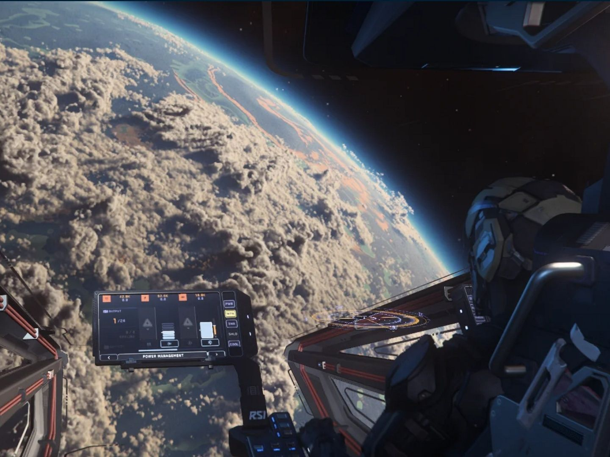

Games announced long ago, now suspended in silence.
Announced: 2008 (Teaser)
After an ambitious reveal in 2017, complete with a tech demo and the promise of a procedural open-world universe, the project has undergone changes in creative direction and internal issues. Ubisoft has confirmed it's still in development, but no concrete gameplay has been shown for years.
Announced: 2018 (Teaser)
Announced with a brief teaser during E3 2018, The Elder Scrolls VI remained without any concrete updates for years. Bethesda confirmed several times that active development would only begin after the completion of Starfield, leaving the project in a lengthy preliminary phase. To date, no gameplay or significant details have been shown, making it one of the most anticipated yet quietest titles in the industry.
Announced: 2012 (Teaser)

Crowdfunded and billed as an unprecedented space simulation, Star Citizen has been in continuous development since 2012. Despite regular updates and new features introduced in the alpha version, the project has yet to reach a full release. Growing ambition and a constantly expanding scope have contributed to prolonging its development, making it a unique case of a project that is always present but never finished.